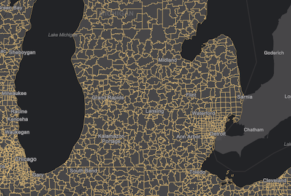

FeatureLayer query and drawing improvements in 2D
In 4.3, the FeatureLayer's fetch strategy for 2D drawing and querying from the feature service has been improved to request and draw more features in less time, giving priority to features in the center of the view. Limitations still exist that result in some features not being visible in the view in certain scenarios. In future releases of the API, feature drawing will continue to improve in performance and scale to mitigate existing issues. Prior to the release of version 4.3 of the ArcGIS API for JavaScript, feature drawing was more limited, restricting datasets with a lot of features from requesting and drawing all available features.

FeatureLayer editing
FeatureLayer now has an applyEdits() method. This method allows you to add, update or delete features from a feature layer in a feature service. The applyEdits() method on the feature layer commits edits to the database. See the Edit features sample which uses this method to add new features, update attributes and delete existing features from a feature service.
New widgets
Three new widgets: BasemapGallery, ScaleBar and Expand.
More widgets supporting widget framework
At 4.2, we introduced the 4.x widget framework as implemented within the LayerList and Print widgets. In this release, the following widgets have been updated to the new widget framework: Attribution, BasemapToggle, Compass, Home, Locate, NavigationToggle, Track and Zoom widgets.
Touch navigation
Intuitive multi-touch gestures can now be used to navigate 2D and 3D views. If you have a touch screen laptop or monitor, you can zoom by pinching with two fingers and pan using one or multiple fingers. You can also double-tap the scene to zoom in a step towards the tapped location. To rotate the scene, move two fingers in a clockwise or counterclockwise direction. In 3D you can tilt the scene by dragging two fingers up or down the screen. An overview of these touch interactions can be found in the Navigation section of the SceneView.
Filter and query scene layers
Setting filters on a mesh scene layer is useful to display only features that fulfill certain conditions. Setting the SceneLayer.definitionExpression property to an SQL expression will instantly filter the layer to display only buildings that satisfy that expression. You can then query only the filtered buildings by using the createQuery() method.
The SceneLayer filter and query sample uses this functionality to filter floors in a building on the Esri campus. The layer is filtered to show only the selected floor in the building. createQuery() is used to calculate how many rooms of each type are on that floor.
SceneLayerView also provides methods to query features, but these will only execute against features that are currently visible. This can be useful to provide information to a user about an object that is in the view. The queryExtent() method on the SceneLayerView returns the 3D extent of the feature, as opposed to the same method on SceneLayer which returns the 2D extent.
In this sample, when the user clicks on a building, the queryFeatures and queryExtent methods on the SceneLayerView are used to zoom to that building and display information about it.
Adjust point size and density in a PointCloudLayer
When visualizing a PointCloudLayer using a PointCloudRenderer, the size and density of rendered points can be adjusted. The pointSizeAlgorithm property specifies how the sizes of points are computed during rendering. Two types of algorithm are available: the splat algorithm increases the rendered point size when the density of points is low, while the fixed-size algorithm assigns a constant user-specified size to all points. pointsPerInch can be used to set the density of rendered points.
In this sample the point size and point density can be adjusted using sliders.
GeoRSS layers in 2D
The API supports GeoRSSLayer, which allows you to display the locations of a live GeoRSS feed in a 2D view. To view the feed, just reference the url of the GeoRSS file and add the layer to the map.
// You must reference the GeoRSS utility service in your Portal instance
esriConfig.request.proxyUrl = "/proxy/";
esriConfig.geoRSSServiceUrl = "https://utility.arcgis.com/sharing/rss";
// Point to the rss feed url
var layer = new GeoRSSLayer({
url: "https://esri.box.com/shared/static/ko99d42udctfv8z0ja2j6dz6q5tzbzu4.xml"
});
map.add(layer);
See the Add a GeoRSSLayer to your Map sample to learn more about how this layer works.
New WebStyleSymbol guide pages and samples
Web style symbols were released at 4.1, giving users the ability to add realistic 3D symbols to data in a SceneView. In this release, we added a guide page describing how to work with realistic point symbols and a reference page listing all web style symbols that may be consumed by the WebStyleSymbol class.
The following samples demonstrate how to use WebStyleSymbol:
- Visualize features with realistic WebStyleSymbols
- Visualize features with realistic 3D symbols
- Symbol Playground
Symbol Playground
The Symbol Playground provides an interactive environment for creating and designing symbols to use in custom web apps built with the ArcGIS API for JavaScript. It allows you to select a symbol type and customize its color, size, shape, image, or symbol layers. As you change the properties of the symbol or symbol layers using the interactive UI elements, a code snippet showing how the symbol is constructed automatically updates. Once the symbol is completed, you can copy the code to the clipboard and paste it into your app. Try it out!
StreamLayer filtering updates
Enhancements were made to the StreamLayer API which changed filtering workflows for the layer. Prior to this release, you could set a definitionExpression and a geometryDefinition in the constructor but could not update them. As of version 4.3, definitionExpression and geometryDefinition are deprecated and replaced with filter, which can take an expression for filtering features by attribute and/or an Extent object for filtering by geometry.
var layer = new StreamLayer({
url: streamLayerUrl,
// only displays whose route id is 20
filter: {
where: "route_id = 20"
}
});
The updateFilter() was also added, allowing you to update the filter(s) after construction of the layer.
// updates the filters on all layer views
layer.updateFilter({
where: null, // removes the attribute filter
geometry: view.extent.clone() // filters by the view extent
});
Workflow Manager functionality
Workflow Manager functionality in web applications is supported using the Workflow Manager tasks. Six new tasks classes have been added to support the Workflow API.
- ConfigurationTask - Get information about the Workflow Manager system configuration such as users, groups, queries, job types, table relationships, data workspace. You can also get system configuration properties such as activity types, hold types, priorities, status types, notification types and privileges.
- JobTask - Helps you work with and manage Workflow Manager jobs. You can manage jobs and attachments, dependencies, holds, extended properties associated with the jobs. Jobs can be searched and queried based on a specific criteria as well.
- NotificationTask - Exposes functions to perform operations with Workflow Manager notifications. You can send both spatial as well as job notifications and subscribe or unsubscribe from notifications. For spatial notifications you can add change rules, delete change rules, get one or all change rules in the system and query the change rules as well. Get the matches found in an editing session or information about an individual match. The spatial notification change rules can also be run on the archived data.
- ReportTask - Generate reports about the work being managed in your Workflow Manager system.
- TokenTask - Parse Workflow Manager tokens to the actual value of token in the job.
- WorkflowTask - Perform operations on Workflow Manager workflows and steps. Get information about a step, and whether a step can be run. You can get all steps in the workflow, or the current steps for execution. The steps can be executed or marked as done when executing a job. The steps can also be set as the current step of workflow and the workflow can be advanced to the next step when the current step is done.
Support for Hindi locale
Version 4.3 adds support for the Hindi (hi) locale. See Localization topic for more information about using different locales.
API updates and enhancements
- Added GeoRSSLayer. Also added geoRSSServiceUrl to esriConfig.
- Added support for CSVLayer in Legend.
- Added two read-only properties, imageMaxHeight and imageMaxWidth, to MapImageLayer.
- Legend now depicts PointSymbol3D) with ObjectSymbol3DLayer) based on the size of each axis, not just uniformly where all axes are the same size.
- New option
3d-volumetric-uniformforsymbolTypeparameter of sizeRendererCreator.createContinuousRenderer(). sizeRendererCreator.createVisualVariable()was renamed to sizeRendererCreator.createVisualVariables() because it now returns an array of visual variables.- New parameter
axisof sizeRendererCreator.createVisualVariables(). - The ContinuousRendererResult returned from sizeRendererCreator.createContinuousRenderer() now has a
visualVariablesproperty, which is an array of visual variables. Previously this property was calledvisualVariableand wasn't an array. - The VisualVariableResult returned from sizeRendererCreator.createVisualVariables() now has a
visualVariablesproperty, which is an array of visual variables. Previously this property was calledvisualVariableand wasn't an array. - New option
3d-volumetric-uniformforsymbolTypeparameter of colorAndSizeRendererCreator.createContinuousRenderer(). - New parameter
sizeOptions.axisof colorAndSizeRendererCreator.createVisualVariables(). - The ContinuousRendererResult returned from colorAndSizeRendererCreator.createContinuousRenderer() now has a
size.visualVariablesproperty, which is an array of visual variables. Previously this property was calledsize.visualVariableand wasn't an array. - The VisualVariablesResult returned from colorAndSizeRendererCreator.createVisualVariables() now has a
size.visualVariablesproperty, which is an array of visual variables. Previously this property was calledsize.visualVariableand wasn't an array. - Added the following events to Collection: after-add, after-changes, after-remove, before-add, before-changes, before-remove.
- Added a new class normalizeUtils and new methods: Point.normalize() and Extent.normalize().
- Added two new methods: applyEdits() and getFieldDomain(), one new property: capabilities, and one new type definition: FeatureEditResult to FeatureLayer.
- Added a new class requireUtils and a new method: when().
- Added a new property: workers to esriConfig.
Breaking changes
sizeRendererCreator.createVisualVariable()was renamed to sizeRendererCreator.createVisualVariables() because it now returns an array of visual variables.
Bug fixes and enhancements
- BUG-000101851: SimpleFillSymbol.style no longer throws an error when using styles other than
noneorsolid. - BUG-000102516: Fixed issues with mouse wheel and zooming on the MapView.
- BUG-000102157: Fixed an issue when orientation of MapView would not update correctly when rotating.
- ENH-000102132: Added two read-only properties, imageMaxHeight and imageMaxWidth, to MapImageLayer.
- BUG-000102336: Zooming out multiple times and rotating in IE no longer makes tiled MapView display incorrectly.
- BUG-000102312: Locales now load properly when using VectorTileLayer.
- BUG-000101862: Fixed an issue where MapView.hitTest() did not return a graphic using IE, Edge or Safari.
- BUG-000102159: Fixed an issue when MapView.zoom would not load basemap properly.
- BUG-000102644: Now possible to force a POST request on MapImageLayer.
- BUG-000097976: Improved memory management when adding/removing graphics from a SceneView.
- BUG-000101867: Fixed an issue with removing a FeatureLayer from a Map that was created from an array of graphics causing an endless loop of errors.
- BUG-000101925: Loading a webmap no longer performs multiple queries if layers are not visible.
- BUG-000102795: Fixed an issue where popups were not displaying properly in Internet Explorer for nested group layers.
Additional packages
Version 4.3 of the ArcGIS API for JavaScript uses Dojo 1.12.1 (since 4.3), dgrid version 1.1.0 (since 4.1), and dstore version 1.1.1 (since 4.0).
Previous releases
- Version 4.13 - October 2019
- Version 4.12 - June 2019
- Version 4.11 - March 2019
- Version 4.10 - December 2018
- Version 4.9 - September 2018
- Version 4.8 - July 2018
- Version 4.7 - April 2018
- Version 4.6 - December 2017
- Version 4.5 - September 2017
- Version 4.4 - July 2017
- Version 4.3 - March 2017
- Version 4.2 - December 2016
- Version 4.1 - September 2016
- Version 4.0 - May 2016